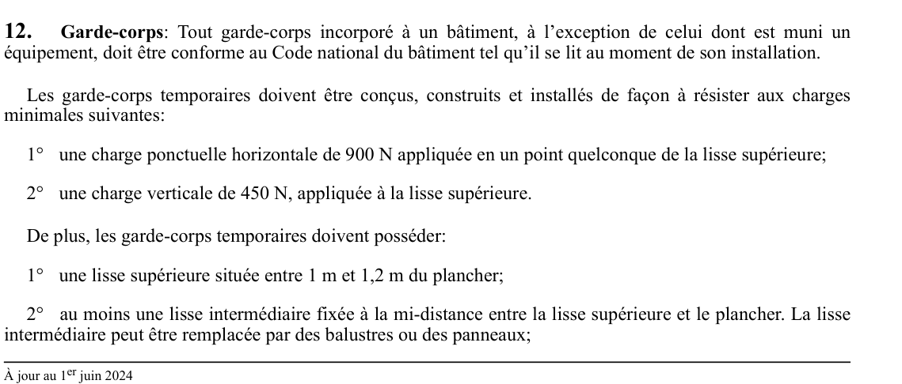

art-12-RSST : garde-corps, conformité au CNB et charges minimales
Deux régimes cohabitent : le garde-corps incorporé à un bâtiment suit le Code national du bâtiment, le garde-corps temporaire doit tenir des charges et respecter des hauteurs précises.
- Garde-corps incorporé à un bâtiment : conforme au Code national du bâtiment tel qu'il se lit au moment de l'installation, donc pas de mise à niveau rétroactive quand le code change.
- Exception expresse : le garde-corps dont est muni un équipement échappe à cette règle de conformité au CNB.
- Garde-corps temporaire, résistance : 900 N en charge ponctuelle horizontale, en un point quelconque de la lisse supérieure, et 450 N en charge verticale sur cette même lisse.
- Garde-corps temporaire, dimensions : lisse supérieure entre 1 m et 1,2 m du plancher, plus au moins une lisse intermédiaire à mi-distance entre cette lisse et le plancher, remplaçable par des balustres ou des panneaux.
- Attention : la capture s'arrête au bas de la page, l'article se poursuit après ce 2e alinéa. Ouvrir le PDF ou LegisQuébec pour la fin du texte.
🌐 LegisQuébec · 📄 PDF officiel
Texte officiel
Garde-corps : Tout garde-corps incorporé à un bâtiment, à l’exception de celui dont est muni un équipement, doit être conforme au Code national du bâtiment tel qu’il se lit au moment de son installation.
Les garde-corps temporaires doivent être conçus, construits et installés de façon à résister aux charges minimales suivantes:
1° une charge ponctuelle horizontale de 900 N appliquée en un point quelconque de la lisse supérieure;
2° une charge verticale de 450 N, appliquée à la lisse supérieure.
De plus, les garde-corps temporaires doivent posséder:
1° une lisse supérieure située entre 1 m et 1,2 m du plancher;
2° au moins une lisse intermédiaire fixée à la mi-distance entre la lisse supérieure et le plancher. La lisse intermédiaire peut être remplacée par des balustres ou des panneaux;
3° une plinthe au niveau du plancher d’au moins 90 mm de hauteur.
Aux endroits où il y a une concentration de travailleurs ainsi qu’aux autres endroits où les garde-corps temporaires peuvent être soumis à des pressions extraordinaires, ils doivent être renforcés en conséquence.
Texte de l’article 12 RSST, extrait de la couche texte du PDF officiel (page 8), sans OCR ni retouche. La capture ci-dessous et le PDF font foi.
{kind=link}

Toucher l'image pour l'agrandir🔗 Voir art. 12 RSST dans le PDF (page 8) · texte à jour au 1er juin 2024
📚 Source légale : D. 885-2001, a. 12; D. 1411-2018, a. 5. · LégisQuébec
Voir aussi
- art. 11 : disposition abrogée
- art. 13 : disposition abrogée
- ⚖️ Loi habilitante : LSST
- ↑ Index du bloc : Aménagement des lieux d'un établissement
Pages qui pointent ici (2)
- RSST : Section 3 : Aménagement des lieux d'un établissement Recueil législatif
- Travailler en hauteur, ton harnais et ton ancrage Sécurité industrielle